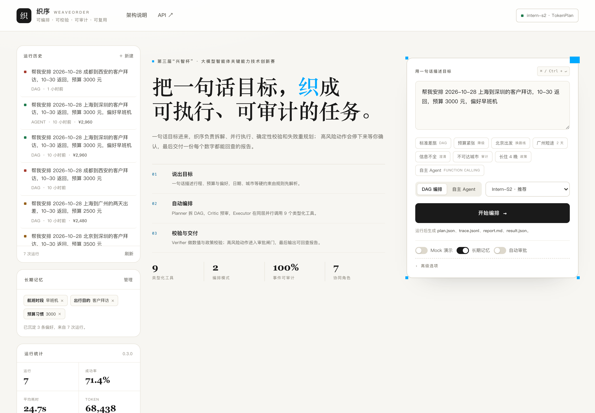
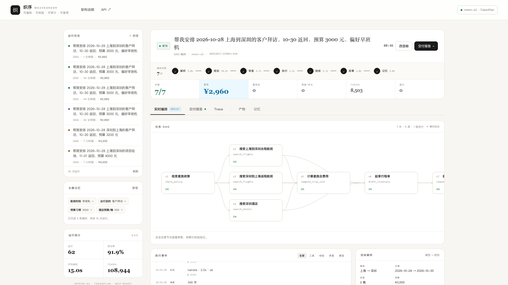
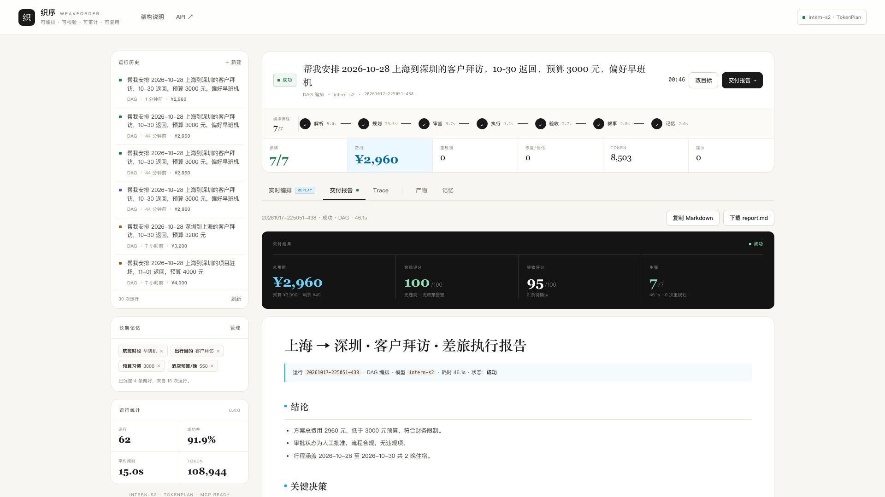

python agent.py --mock "…" / python a2a_server.py。报告中全部数字与截图均来自真实运行，可按 §7 复现。「帮我安排 10 月 28 日上海到深圳的客户拜访，预算 3000 元」——这句话和一个可以提交给财务与客户的差旅方案之间，隔着政策检索、多轮比价、费用计算、合规核查、人工审批和失败恢复。把这一段交给提示词，得到的是概率；把它交给编排层，得到的是可审计的交付物。
我们用同一本书生 Intern-S2 做了对照：让模型以原生 Function Calling 自主循环调用工具（业界最常见的 ReAct 式做法，即织序的 agent 模式），与织序的 DAG 编排模式执行同一个差旅任务：
| 指标（同一任务 T01，live） | ReAct 单 Agent | 织序 DAG 编排 | 差异来源 |
|---|---|---|---|
| Token 消耗 | 49,781 | 7,034（7.1× 优势） | Blackboard 引用代替把长 JSON 反复塞回上下文 |
| 工具调用次数 | 9 次 | 7 次 | 计划先行，无试错型调用 |
| 预算越权风险 | 靠提示词约束 | 引擎强制校验 | risk≥2 动作硬闸门 |
| 结论可追溯 | 对话历史 | 全量事件 Trace | 每个数字反查到工具调用 |
这不是实现优劣问题，而是结构问题：ReAct 循环把「计划、执行、校验、恢复」全部压进模型上下文，每一步都为上一步的全部历史付费；编排层把四件事拆开，各自用确定性机制兜底，模型只做选择与解释。
LangGraph、CrewAI 等框架提供图/角色抽象，但编排逻辑的正确性仍然依赖使用者自行验证——组件拆掉之后系统质量如何，没有人量化。
织序把校验、修复、重规划、审批做成引擎的一等公民，并用消融实验给出组件级证据：拆掉校验层，任务通过率从 5/5 崩到 1/5（mock）与 3/3 崩到 1/3（live）。可靠性不是宣称，是测量结果。
图 1 · 织序编排引擎：模型负责理解与选择，引擎负责依赖、状态、校验、恢复与审计
| 决策 | 做法 | 解决的实际问题 |
|---|---|---|
| 确定性优先 | 日期/城市/费用/政策阈值由代码判定；计算封装为工具（compute_trip_cost），禁止模型心算 | 数值幻觉：报告里的每个数字都能反查到工具返回 |
| 三级失败恢复 | 步骤内确定性修复（放宽过严过滤）→ 预算组合优化器（预算内最优/降级+审批）→ LLM Replanner（只改未完成子图） | 空结果、超预算、不可达：每类故障有明确恢复路径，绝不静默失败 |
| 风险分级审批 | 工具声明风险等级；risk≥2 的动作引擎级暂停，批准/拒绝/超时全部写入 Trace | “能不能自动执行”成为引擎能力而非提示词约定 |
| 角色化模型路由 | Intern-S2 负责规划/重规划，轻量模型负责审查、抽取、叙事；结构化任务显式关闭思考 | 规划耗时从分钟级降到秒级，成本可控 |
| 上下文工程 | Blackboard 结果引用（$s2.best.price）、工具描述压缩、结果摘要、Agent Skills 注入 | Token 消耗为单 Agent 模式的 1/7 |
| 长周期记忆 | 偏好画像 + 历史行程；白名单键 + 置信度 + 敏感信息过滤；规则/模型双通道写入 | 跨运行个性化，且不覆盖本次显式约束 |

图 2 · Intern-S2 真实运行（run 20261017-225051-438）：阶段耗时（解析 5.0s → 规划 29.5s → 执行 1.1s → 验收 2.7s）、7/7 步、¥2,960、8,503 tokens、并行 DAG 与记忆面板同屏可见
织序本身就是 harness。按照三大开放标准实现对外互通，全部手写、零新增第三方依赖，Python 3.9 即可运行——可复现性本身就是评分标准之一。
实现 Agent2Agent 开放协议（Linux Foundation）：AgentCard 自动发现、message/send、SSE 流式、任务查询与取消，兼容 v1.0 方法命名。
stdio MCP Server 向任意 MCP harness 暴露 9 个类型化工具，支持 2025-06-18 / 2025-03-26 / 2024-11-05 三代协议版本协商。
按 agentskills.io 开放标准加载 SKILL.md：技能注入 Agent 提示（上下文工程），并自动进入 A2A 能力声明。
| 候选（2026-10 最新版） | Python 门槛 | 结论 |
|---|---|---|
| mcp 官方 SDK 2.3 / a2a-sdk 1.2 / mem0ai 2.2 / langgraph 1.2 / crewai 1.15 | 均要求 ≥3.10 | 不引入。按官方规范手写协议层，锁定 3.9+ 零重依赖 |
| agentscope 2.0 | ≥3.11 | 同上 |
| 自研引擎（织序） | 3.9+，仅 fastapi/uvicorn/httpx/pydantic | 编排层是本作品的技术贡献，引擎即 harness；依赖越少，评委复现成本越低 |
.venv/bin/python a2a_server.py --port 8001 # 默认 mock 模式，无需 API Key GET /.well-known/agent-card.json → 名称/技能/接口自动声明（含 2 个 Agent Skill） POST / message/send → 8ms 完成一次完整编排，返回 Task + 报告 artifacts POST / message/stream → SSE：working → artifactUpdate → completed
同一个引擎由此获得三种调用形态：人用 Web 控制台、外部 harness 经 MCP 用工具、远程智能体经 A2A 委托任务——开放赋能不是加了适配层，而是引擎的原生形态。
评测的目标不是刷分，而是回答一个问题：编排层的可靠性来自哪里？我们为引擎内置了消融开关（verify / replan / parallel），对同一任务集在确定性与真实模型两种条件下做组件级对照。
| 变体 | Mock 通过 | Live 通过 (Intern-S2×12) | 关键观察 |
|---|---|---|---|
ours | 5/5 | 3/3 | 预算无解 → 显式降级 + 审批；注入故障 → 步骤内修复恢复 |
w/o-verifier | 1/5 | 1/3 | ¥2960 方案在 ¥2000 预算下被误报成功；故障注入后连烧 2 轮重规划仍失败 |
w/o-replanner | 5/5 | 3/3 | 本组故障在确定性修复覆盖内——纵深防御：拆掉一层，下一层兜住 |
serial-exec | 5/5 | 3/3 | 固定串行流水线；正确性相同，并行收益体现为 parallel_rounds 结构指标 |
两个结论：① 校验层是约束满足率的决定性组件——它在 mock 与 live 双条件下都是唯一的崩塌点，去掉它省下的每秒时间都换来不可交付的结果；② 恢复链的顺序有价值——w/o-verifier 的注入任务浪费 2 轮 LLM 重规划仍然失败，反证「先确定性校验、后模型重规划」的设计顺序。
经营分析场景（CSV → SQL 聚合 → 报告，标准库 sqlite3 真执行）对校验层做了同一组对照——渲染时故意算错关键环比，校验开/关两条路径：
| 分析场景用例 | 结果 | 观察 |
|---|---|---|
| 华东数码骤降归因（A01） | ✅ 6/6 之一 | 报告给出 -58.4%（品类）/ -22.3%（大区）/ -8.7%（全国），与评测脚本独立重算的黄金值逐位一致 |
| 注入 + 校验开（A05） | ❌ 被拦截 | 「报告值 -29.2 与数据源重算值 -58.4 不一致，已拦截，不会发布」 |
| 注入 + 校验关（A06） | ⚠️ 错误发布 | 算错一半的 -29.2% 直接进入交付报告——差旅与分析两个领域，崩塌模式完全一致 |
| 数据不覆盖的大区（A04） | ✅ 诚实失败 | 数据源不覆盖西北 → 明确失败，不编造、不外推 |
这组对照同时兑现了 §5.2 的承诺：确定性校验不是差旅业务的特判，而是域无关的引擎原语。
| 通道 | 结果 | 覆盖 |
|---|---|---|
| Mock 确定性回归 | 12/12（0.1s） | 标准/降级/失败/缺日期/中文日期/反向路线/1晚/4晚 |
| Live · Intern-S2 规划路由 | 2/2 | T01 标准差旅 ¥2960 · T13 自主 Agent |
| Live · Qwen 全快模型 | 4/4（89.3s） | 含预算无解降级、失败审计、Agent 模式 |
Mock 与 live 双重验证是刻意的设计：确定性数据源让 mock 回归精确到元（费用断言误差 ≤1 元），可复现、秒级；真实模型通道证明同样的编排逻辑在概率性组件之上依然成立。两条通道用的是同一套引擎、同一套校验——换掉模型，编排能力不变。

图 3 · 交付报告：总费用 ¥2,960 / 预算 ¥3,000、政策合规评分 100/100、验收评分 95/100；报告正文每个数字都可经 Trace 回查到工具调用（7/7 步 · 46.1s · 0 次重规划）
真实模型接入的深度体现在边界情况的处理上。以下每一条都来自真实故障与修复，全部有代码与 Trace 佐证。
Intern-S2 默认输出 reasoning_content，结构化任务会被思考 token 吃满 max_tokens 导致空响应。织序按角色路由：结构化抽取显式关闭思考并自动放大额度重试，规划任务保留深度思考开关——规划耗时从分钟级降到秒级。
优先 response_format=json_object；失败时从混合文本中抽取 JSON；再失败交给修复器。Planner 同时做字段适配（模型爱写 dag/params），最终以 Schema 校验为准——模型输出永远不直接进执行器。
LLM 计划必须通过静态校验：工具必须存在、必填参数齐全、依赖无环、步数受控。校验失败自动回退规则规划器——系统永远可运行，降级显式可见。
自动修复 httpx 0.28 对 NO_PROXY=[::1] 的解析崩溃；只读工具失败自动重试一次、写操作不重试避免副作用；超时与风险等级在工具注册表统一声明。
内置确定性航班/酒店数据源是面向比赛场景的刻意选择：评委无 Key 可完整复现，评测断言精确到元。接入真实票务只需替换 core/catalog.py 一个模块——工具注册表与校验层不用改。
file_read / sql_query（标准库 sqlite3 真执行）/ report_render 与差旅共用同一套引擎原语（注册表、Trace、确定性校验、产物布局），只换工具集。6/6 分析评测通过，黄金值由评测脚本独立重算；数据不覆盖的大区诚实失败，缺失值只披露不插补。
多 Agent 分工（Planner Agent / Booking Agent / Policy Agent）、记忆后端外部化（向量库 + 用户隔离）同属演进方向；当前版本的多智能体协同已在角色层完成（7 角色、独立提示词与模型路由）。
# ① 无 Key 体验完整链路（mock：规则规划 + 确定性数据源） git clone git@github.com:iakRulan/weaveorder-agent.git && cd weaveorder python3 -m venv .venv && source .venv/bin/activate && pip install -r requirements.txt python agent.py --mock --yes "帮我安排 2026-10-28 上海到深圳的客户拜访，10-30 返回，预算 3000 元" # ② 真实书生模型（配置 .env 后） python agent.py --yes "帮我安排 2026-10-28 上海到深圳的客户拜访，10-30 返回，预算 3000 元" python agent.py --yes --mode agent "…" # 原生 Function Calling 对照 # ③ Web 控制台 / MCP / A2A .venv/bin/uvicorn app.server:app --port 8000 # SSE 实时编排 + 审批闸门 .venv/bin/python mcp_server.py # 9 个工具供任意 MCP harness 调用 .venv/bin/python a2a_server.py --port 8001 # A2A 智能体（无 Key 可公开部署） # ④ 评测与消融 .venv/bin/python eval/run_eval.py --mode mock # 12/12 回归 .venv/bin/python eval/run_eval.py --suite ablation --mode mock # 消融（确定性） .venv/bin/python eval/run_eval.py --suite ablation --mode live --task T01 --task T02
| 材料 | 链接 / 位置 |
|---|---|
| 代码仓库（公开） | github.com/iakRulan/weaveorder-agent |
| 演示视频（1080P · ≤5 分钟） | github.com/iakRulan/weaveorder-agent/raw/main/docs/demo.mp4 |
| 评测结果 | eval/results-mock.md · results-live-intern.md · results-live-qwen.md · results-ablation-mock.md · results-ablation-live.md |
| 在线体验（公开演示） | http://39.105.68.73:8000（Mock 模式，无需 Key；A2A 见 AgentCard） |
| 技术方案 / 提交清单 | docs/02-技术方案.md · docs/03-提交材料清单.md |
织序证明的事情很具体：基于书生大模型，用一套可审计的编排层，把一句话目标变成每个数字可回查、每个高风险动作有人把关、每个组件贡献可测量的交付物。这套能力今天就可以被任何 MCP harness、任何 A2A 客户端、任何 Agent Skills 加载器直接使用。